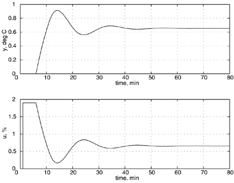
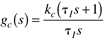
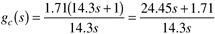
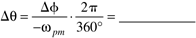

| [ Team LiB ] |
|
M6.4 Ziegler-Nichols TuningThe tuning parameters recommended by Ziegler and Nichols (1942) were shown in Table 6-1. Generally, these values are not very robust. The objective of this section is for you to calculate the values of the gain and phase margins for each of these recommended values. Tyreus and Luyben modified the suggested Ziegler-Nichols parameters for increased robustness (see Luyben and Luyben, 1997); these recommended values were shown in Table 6-2. Recall that the P-only controller tuning recommended by Ziegler and Nichols (1942) results in a controller that has a gain margin of 2 (since the proportional gain is one half of the ultimate gain). This is also shown by the following MATLAB analysis. » kc = 3.8/2; » [mag,phase,w] = bode(kc*fodt); » [Gm,Pm,Wco,Wpm] = imargin(squeeze(mag),squeeze(phase),w) Gm = 2.00049180434395 Pm = 75.49091926803467 Wco = 0.36655875121677 Wpm = 0.16127245556240 The gain margin is 2 and the phase margin is 75°, indicating that a reasonable amount of uncertainty can be tolerated before the closed-loop system goes unstable. The closed-loop responses (measured output and manipulated input) for kc = 1.9 are shown in Figure M6-7. Figure M6-7. Closed-loop response for a setpoint change of 1 at time = 1 minute, with kc = 1.9 (Ziegler-Nichols recommended P-only setting). Notice the offset due to the P-only controller. Problem 2. Find the gain and phase margins when Ziegler-Nichols PI settings are used. Compare these with the gain and phase margins of the Tyreus-Luyben recommended PI settings. Compare the closed-loop responses (time domain) for both of these controller settings; include plots of the manipulated input action. Hint: Create a transfer function for the PI controller and multiply it with the process transfer function. Recall that a PI controller transfer function is  The Ziegler-Nichols recommended parameters for a PI controller are then  The commands to MATLAB are then » gc = tf([24.45 1.71],[14.3 0]) Transfer function: 24.45 s + 1 ----------- 14.3 s » [mag,phase,w] = bode(gc*fodt); » [Gm,Pm,Wco,Wpm] = imargin(squeeze(mag),squeeze(phase),w) Thus far, we have used the gain margin to determine either how much the controller gain can be increased before instability occurs, or how much the process gain can increase before instability occurs. Next, we illustrate how the phase margin is related to time-delay uncertainty that can be tolerated. Problem 3. Use the Ziegler-Nichols recommended P-only value of kc = 0.5 kcu = 3.8/2 = 1.9. What is the phase margin for this value of controller gain? What is the frequency associated with this phase margin? Calculate the amount of additional time delay that can be tolerated from  Add this time delay to the process model and show that the new phase margin is now 0. Show that the time-domain closed-loop simulations have an oscillation with a frequency of wpm. Include plots of the manipulated input action. |
| [ Team LiB ] |
|